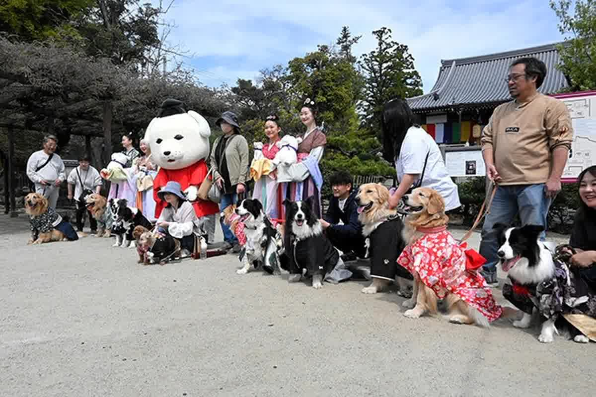
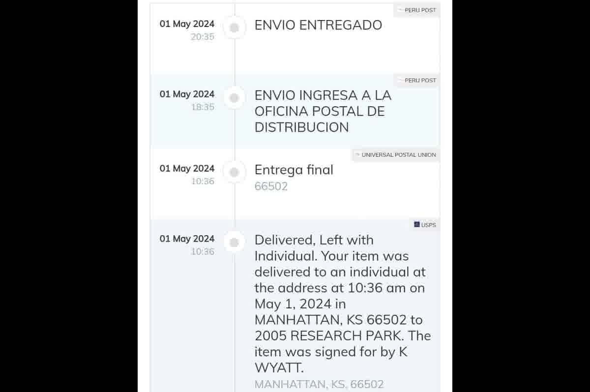

Emmener votre animal de compagnie au Japon nécessite une puce électronique, deux vaccins contre la rage, une sérologie, une attente de 180 jours et un préavis de 40 jours à l'AQS.

Le contrôle japonais ne punit pas le « manque de papiers » ; punit pour le manque de temps. L'horloge pertinente est l'attente obligatoire de 180 jours après la sérologie de la rage, et ce nombre définit la date la plus rapprochée à laquelle un chien ou un chat peut entrer avec une courte quarantaine. En consultation à Trujillo, la pierre d'achoppement la plus fréquente apparaît lorsque le propriétaire comprend la procédure comme une certification finale, alors qu'au Japon la procédure est un calendrier.
La conséquence d'une planification tardive n'est pas une amende : il s'agit d'une quarantaine pouvant aller jusqu'à 180 jours dans les installations du Service de Quarantaine Animale (AQS) lorsque le dossier ne remplit pas les conditions à l'arrivée. Lorsque vous essayez d'amener votre animal de compagnie au Japon avec une date fermée et sans marge, la correction n'a pas lieu au Pérou : elle a lieu dans le cadre du système de quarantaine. Le Japon ne s'improvise pas à la frontière, et la traçabilité est validée par la lecture de puces électroniques, de certificats et de séquences.
Les autorités japonaises séparent les origines entre les régions désignées (exemptes de rage) et non désignées. Pour les régions non désignées – où se situe la majeure partie de l’Amérique latine – le dossier nécessite une micropuce, une vaccination antirabique conforme aux exigences réglementaires internationales appliquée avec la micropuce déjà implantée, une sérologie et une attente de 180 jours. La marge est à la fois clinique et documentaire : une information hors séquence invalide la section précédente.
L’erreur la plus courante en matière de consultation consiste à supposer que le Japon est semblable à l’Europe. L’Europe travaille généralement avec des fenêtres courtes autour du certificat et en mettant l’accent sur la colère et les documents ; Le Japon ajoute une résidence de mois, et cette résidence n'est pas accélérée. Lorsqu'un propriétaire arrive du Pérou avec une date de vol fixe, le dossier est déjà décidé par le calendrier et non par l'intention.
Ce schéma affecte également les itinéraires avec arrêts. Même si le vol transite par un autre pays, le dossier est jugé sur l'origine réelle de l'animal et la chaîne de preuves. En pratique, ce qui est audité, c'est ce que déclare le document officiel et ce que la puce électronique permet de vérifier par lecture.

Le Japon exige une puce électronique compatible avec les normes ISO (11784/11785) et l'exige avant le premier vaccin antirabique que vous souhaitez revendiquer. La commande est vérifiée dans les certificats. Lorsque la puce électronique est placée plus tard, l'autorité perd la possibilité de lier avec certitude le vaccin et l'animal, et le dossier devient fragile jusque dans la section qui prend en charge la sérologie.
Le point que peu anticipent est la double vaccination. Pour les origines non désignées, le Japon exige au moins deux vaccinations contre la rage après micropuce. Le premier ne peut être appliqué avant l’âge de 91 jours et le second doit être appliqué avec un intervalle minimum de 30 jours par rapport au premier. Le calendrier réel dépend du type de vaccin et de sa validité, mais l’exigence de « deux doses valides » est cohérente dans les lignes directrices de l’AQS.
En concertation, nous travaillons là-dessus comme une vérification de continuité : lecture du numéro de micropuce, enregistrement avec données complètes et dates cohérentes avec l'âge de l'animal. Sans cette cohérence, toute étape suivante devient réversible, et au Japon, cela prend des mois.
La sérologie de la rage (test d'anticorps) est effectuée une fois que l'animal est déjà équipé d'une micropuce et qu'il a reçu deux vaccinations valides. Le Japon fixe un seuil d'anticorps (0,5 UI/ml) et, une fois l'échantillon prélevé, exige une attente minimale de 180 jours avant l'arrivée. Cette section existe même si l'animal est en parfaite santé. Ce n'est pas un critère clinique, c'est un critère de biosécurité.
Le propriétaire entend souvent « six mois » et pense que c'est un conseil. Au Japon, il s'agit d'un minimum réglementaire. Si l'animal atterrit avant d'avoir complété les 180 jours, l'AQS pourra le retenir pour compléter les jours restants en quarantaine. Cette situation n'est pas résolue par un nouveau certificat délivré au Pérou ou par une lettre du vétérinaire. Il se résout en attendant.
Autre détail opérationnel : le résultat sérologique a une fenêtre de validité dans la réglementation japonaise, et le dossier complet doit s'inscrire dans ces périodes de validité. C'est pourquoi il n'est pas conseillé d'avancer les examens sans un plan d'arrivée. Un dossier bien monté au départ peut perdre de la valeur à cause d’un simple désalignement des dates.
Le Japon exige un préavis d'arrivée à l'AQS au moins 40 jours à l'avance. Il ne s'agit pas d'un formulaire de « rapport » ; Il s'agit d'un contrôle permettant au port ou à l'aéroport d'entrée de planifier l'inspection et de vérifier les exigences avant l'arrivée. Lorsque cet avis est soumis tardivement, le dossier est exposé à des changements de vol, à des corrections de dernière minute ou à une entrée sur un itinéraire non prévu.
Dans cette section, la difficulté n’est généralement pas d’obtenir « un certificat » mais plutôt d’obtenir des certificats dont le contenu est correct : numéro exact de la puce électronique, dates documentées et produit antirabique, sérologie avec un laboratoire et une méthode acceptés, et un certificat sanitaire officiel d’exportation délivré par l’autorité compétente du pays de départ. Depuis le Pérou, cela se traduit par une coordination avec le circuit officiel d'exportation et une cohérence des données avalisées.
Pour la base technique complète, vous pouvez lire Quarantaine dans l'importation internationale de chiens et de chats : bases épidémiologiques, modèles réglementaires et points d'échec critiques dans notre série technique. Ce texte explique en détail comment est interprétée la quarantaine aux frontières et pourquoi certaines destinations transforment une erreur documentaire en rétention effective de l'animal.
La première décision est temporaire et non émotionnelle : fixer une date d'arrivée possible seulement après avoir calculé le délai de 180 jours à partir de la sérologie. À Trujillo, nous voyons des propriétaires qui commencent par le ticket et essaient ensuite d'intégrer les vaccins, la sérologie et le préavis ; Au Japon, cette ordonnance met fin à l'affaire car le préavis de 40 jours et les certificats finaux dépendent d'un calendrier déjà fermé.
La deuxième décision est la traçabilité. Une puce électronique qui ne lit pas correctement, un relevé de notes avec un chiffre modifié ou un vaccin sans données complètes produit un enregistrement qui semble correct jusqu'à l'arrivée de l'inspection. C’est ce scénario qui génère des corrections et des rééditions répétées, juste au moment où la stabilité est nécessaire sur des dates courtes.
La troisième décision est celle de la logistique sanitaire : définition de qui tient à jour le dossier complet depuis le début, avec copie de chaque document, contrôle de validité et plan de reprogrammation. Le Japon tolère les changements de vol ; ne tolère pas les changements de séquence. Lorsque le cas quitte le Pérou, la discipline documentaire fait partie des soins cliniques.
Un cas armé tardif se dirigeant vers le Japon se termine généralement par une quarantaine prolongée pour compléter les jours restants de la période de 180 jours suivant la sérologie. Chez Zoovet Travel, nous vérifions la puce électronique, la chronologie de la rage, la sérologie, le préavis de 40 jours et le dossier de départ du Pérou.